Costruiamo il futuro, custodiamo la Sicilia
Scopri l'impegno che mettiamo per un FUTURO più sostenibile, trasparente e responsabile
Scopri di più470 ettari
di vigneto 100% biologico
-87%
consumo d'acqua per litro di vino
432,73 kWp
di impianto fotovoltaico
40+ paesi
in cui esportiamo i nostri vini
Chi Siamo

Le Origini
-
1978
Fondata in provincia di Trapani da Salvatore Di Gaetano.
-
Metà anni '90
Si inserisce anche la moglie Vinzia di Gaetano, che contribuisce a portare avanti l'azienda.

L'Azienda
L'azienda gestisce diverse tenute posizionate in territori unici e differenti della Sicilia:
- - Agro di Trapani (4 tenute)
- - Tenuta Cavanera (Etna)
- - Tenuta Calamoni (Favignana)

Il Team
Un team di oltre 40 professionisti e maestranze locali tra personale stabile e stagionale:
- - Team Enologico e Agronomico
- - Team specializzato in Viticoltura di Precisione ed Eroica
- - Team Hospitality e Wine Tourism

Produzione
I numeri della Produzione 2024
- 2,4 mln bottiglie, circa, pari a 1.776.000 litri
- 470 ettari estensione vitata totale
- 40+ paesi in cui esportiamo i nostri vini
Punti Di Forza
Sostenibilità Ambientale
100% Biologico e Impronta Zero
Coltiviamo circa 470 ettari di vigneti senza prodotti chimici di sintesi. Ci impegniamo a rimanere un'azienda Carbon Neutral, riducendo e compensando le emissioni di CO2 per proteggere il clima e il territorio.
Responsabilità Sociale
Legame con il Territorio e Lavoro Etico
Valorizziamo la comunità siciliana impiegando maestranze locali e promuovendo la cultura del vino sostenibile. Recuperiamo gli antichi bagli e i vigneti storici per preservare la memoria dell'isola.
Innovazione e Ricerca
Agricoltura di Precisione e Biodiversità
Applichiamo tecnologie avanzate per monitorare ogni singola vite e ridurre gli sprechi idrici. Salvaguardiamo la biodiversità nei nostri diversi terroir, dalle terre vulcaniche dell'Etna al mare di Favignana.
Qualità e Tracciabilità
Dalla Terra alla Bottiglia
Garantiamo la totale tracciabilità della filiera grazie alla certificazione ISO 22005. Offriamo vini biologici d'eccellenza, puri e autentici, nel pieno rispetto dei ritmi naturali della terra.
Sostenibilità

Pilastro Ambientale
Meno impatto, più natura
- Vigneto 100% biologico su 470 ettari di terreno
- Consumo energetico di 0,35 kWh per litro di vino
- Consumo d'acqua per litro di vino ridotto dell'87% dal 2019 al 2024
- Impianto Fotovoltaico da 432,73 kWp
- Recupero di vitigni autoctoni storici e la protezione dei biotipi unici dell'Etna e di Favignana.

Pilastro Sociale
Tuteliamo le persone e il territorio
- Sicurezza sul lavoro a norma di legge secondo le norme attualmente in vigore
- Parità salariale e nessuna discriminazione
- Promozione della cultura locale attraverso il sostegno a eventi come "Visioni Verticali", "Calici di Stelle" e "Firriato Art Gallery al Vinitaly"
- Piano annuale di formazione per i dipendenti su sicurezza e sostenibilità
- Coinvolgimento sostenibile della filiera e dei fornitori
- Dialogo e trasparenza con tutti gli stakeholder
Certificazioni
Obiettivi Di Sostenibilità
Il nostro impegno per un futuro sostenibile
Riduzione progressiva dell'uso di risorsa idrica per ogni litro di vino prodotto, con costante ottimizzazione, manutenzione e adeguamento tecnologico dei depuratori esistenti per riciclare l'acqua in vendemmia
Impegno per la riduzione delle emissioni di CO2 per il mantenimento e ottimizzazione dello status di prima cantina italiana certificata Carbon Neutral - dall'ente internazionale DNV
Transizione verso un packaging totalmente ecocompatibile,riducendo peso delle bottiglie e utilizzando esclusivamente cartoni riciclati e sugheri certificati a impronta zero
Incremento del riutilizzo dei sottoprodotti della vinificazione, in un'ottica di piena economia circolare e valorizzazione degli scarti

Scarica il nostro Report di Sostenibilità
Scopri i nostri impegni e i risultati raggiunti nel percorso di sostenibilità.
Scarica il Report